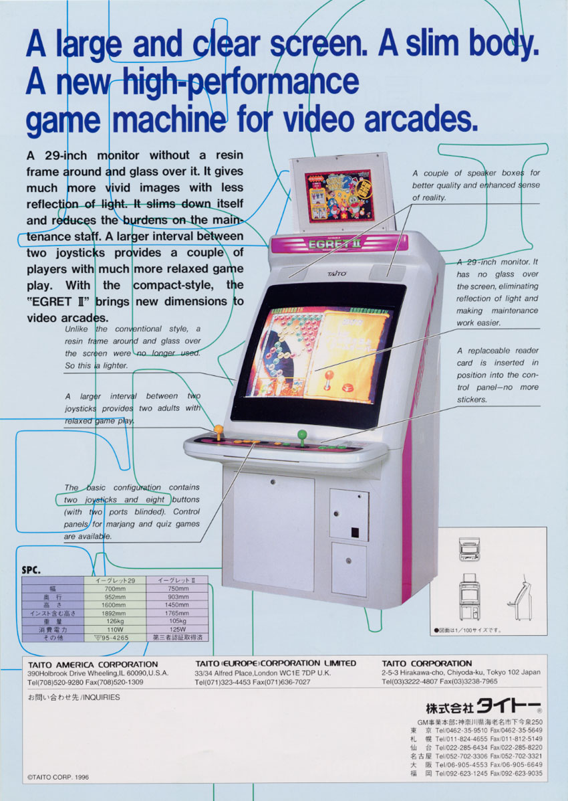
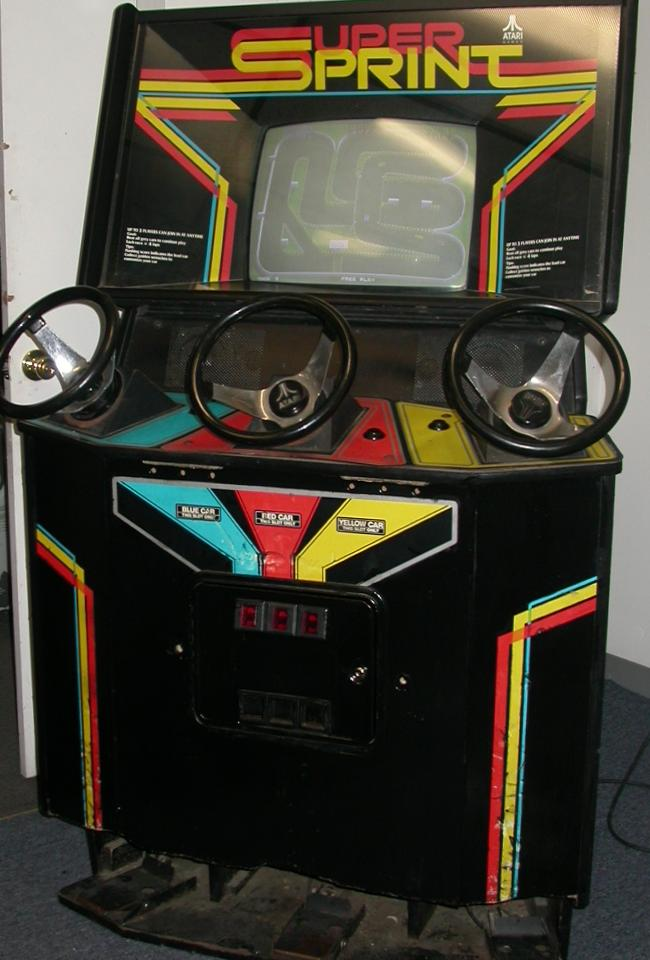
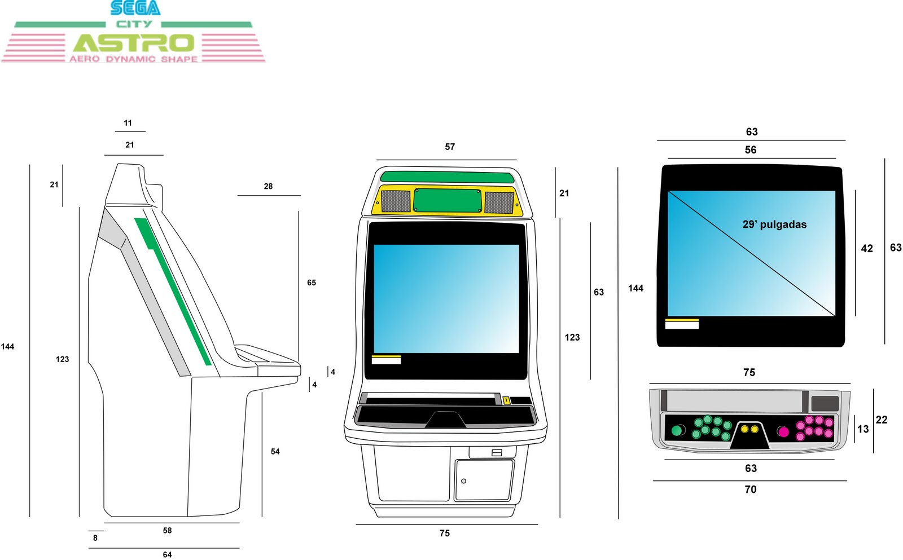
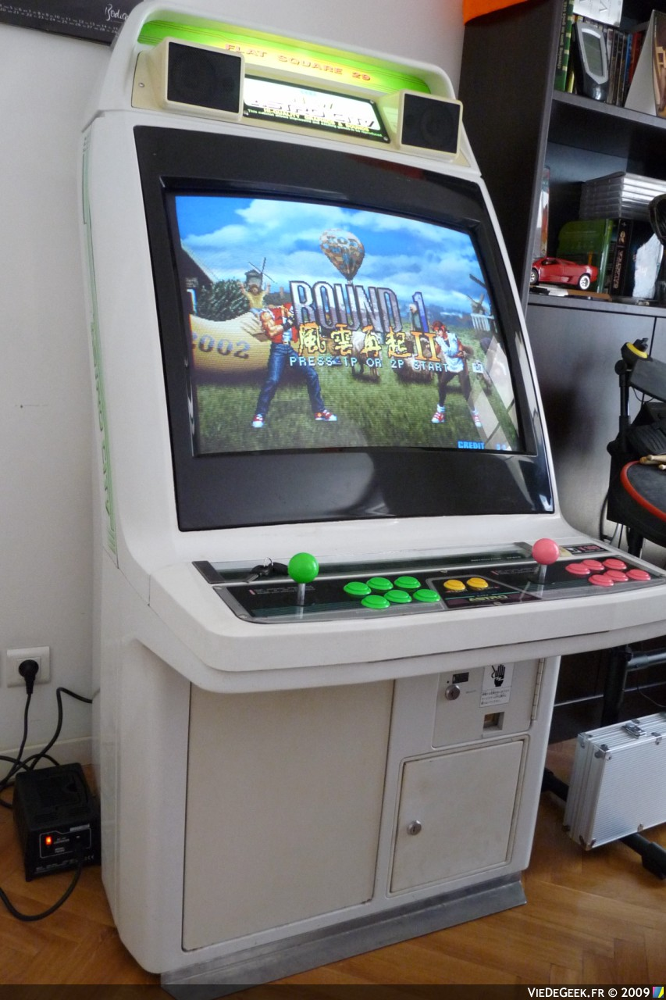

cela se passe chez et avec MIX'ART MYRYS 12 rue Ferdinand Lassalle 31200 Toulouse
cela se passe chez et avec MIX'ART MYRYS 12 rue Ferdinand Lassalle 31200 Toulouse
Tetalab / Mix'Art Myrys, 12 rue Ferdinand Lassalle, 31200 Toulouse / FR
Pour faire court, une rencontre qui brasse des gens venant d’horizons culturels et techniques très divers, autour de l’utilisation créative des technologies, leur appropriation et la compréhension des enjeux qu’elles suscitent.
À l’origine, il y a les hackerspaces, des laboratoires plus ou moins formels où tous ceux qui le désirent se regroupent sur des projets touchant à la science, aux technos, à l’art numérique et j’en passe. Ce rassemblement est l’occasion pour eux d’échanger sur leurs réalisations, leurs expériences avec tout/e/s.
Conférences, ateliers, concerts et performances !!
Une série d’une dizaine de conférences qui vont du Faire soi-même ou DIY au hacking juridique, en passant par les réseaux sociaux alternatifs ou autres bizarreries... mais aussi des ateliers où vous êtes invités à venir fabriquer/bidouiller/tritouiller vos propres créations, à apprendre aussi... Les conférenciers nous viennent d’un peu partout en France mais aussi d'Italie et d’Espagne.
Des performances artistiques, Video mapping, VJ, des installations et des concerts pour faire un bon mix d'art et de tech.
Mix'Art Myrys (célèbre et historique collectif artistique) et le Tetalab (hackerspace toulousain) s'associent pour créer un événement riche et surprenant !
Free as in free beer ;-)
SqueakBot est une image spéciale pour Squeak basée sur Physical etoys. Elle permet de piloter tout type de montage dont des robots à travers l'intégration de plusieurs interfaces électroniques dont les cartes Arduino.
Nous présenterons différentes activités pédagogiques pour les niveaux primaire, collège et lycée et l'intérét pédagogique de leur utilisation.
Nous nous attacherons aussi à présenter comment des individus, des associations et des institutions ont pu collaborer à la construction d'un outil pédagogique libre et performant.
Video: linux_edu_arduino.avi (543M)
Avec Renaud
Video: renaud_gsm.avi (662M)
Services cachés de Tor, permets de publier du contenu anonyme, sans passer par une adresse IP et d’avoir l’équivalent d’un site web régulier sans passer par l’enregistrement d’un nom de domaine. Avec une volonté d’accessibilité de ces outils au plus grand nombre, ce principe relance le débat sur les libertés sur Internet, la préservation de l’anonymat et de la vie privée, l’indépendance face aux multinationales du secteur (Google...), et le respect des lois en vigueur.
Avec Vecna, Italie
Video: tor2web_globaleaks.avi (835M)
Wepr0n est une extension pour Mozilla Firefox exclusivement dédiée à la pornographie. Pour désacraliser la question de la pornographie, transformer son expression en ligne, dans une expérience sociale basée sur le Partage.
Avec WePr0n, Italie
Video: wepr0n.avi (307M)
Captcha Intruder est un outil qui franchir automatiquement les captchas.
Avec Lord Epsylon, Espagne
Video: captcha_intruder.avi (407M)
Les hackerspaces ont permis depuis quelques années une reprise en main des outils de recherche, de création et de production. Ceux-ci sont pour la majorité situés dans un espace urbain, donc couteux et restreint en terme d'espace.
Les hackerlands, à l'instar des hackerspaces, visent à permettre l'existence et le développement de projets libres, mais cette fois dans un environnement peu couteux, spacieux que sont nos douces campagnes: Plantations expérimentales, zones de phytodépollution, banques de graines, parcs de sculptures et de création contemporaine, espaces numériques et biologiques en plein air, centre autogéré de remise en forme de geek burnout, apprentissage de la survie, auto-production de l'énergie et innovation énergétique, réseaux maillés appliqués à des besoins ruraux...
Avec Philippe Langlois
Video: hackerlands.avi (518M)
Avec Benjamin Bayart, Jérémie Zimmerman et Philippe Langlois.
Video: table_ronde_internet_liberte.avi (1.3G)
Le cinema numérique a choisi le jpeg2000 comme format de compression tout comme le spatial et le medical. Ce format de compression est basé sur la transformation en ondelette et le codage entropique. Présentation du format et des solutions libres : OpenJpeg
Côté cinema : présenter de la copie numérique. L'équipement dans les cinémas. Tour de piste des mesures de sécurités prisent pour éviter le piratage : il y a une frénésie sécuritaire dans le DCI. Enjeux pour les cinémas indépendants et art & essai lors de la transition numérique. Matériel numérique coûteux, obsolescence rapide : comment une salle indépendante peut-elle s'adpater au numérique
Proposition d'une solution de cinema alternative : enjeux permettre à tout réalisateur/producteur l'accès à la projection en salles obscures. Distribution horizontale des oeuvres.
À l’ère du numérique, nous avons accès à de nouveaux outils de conception, modélisation, design et création assistés par ordinateur. Pourtant, les seuls moyens de fabrication numérique accessibles sont de simples imprimantes.
Les Fab Lab, laboratoires de fabrication, où toute personne peut venir expérimenter ou fabriquer elle-même tous types d’objets, proposent de démocratiser la fabrication numérique pour favoriser l’innovation et la diffusion des connaissances, et permettent la réappropriation des technologies par tous.
Après un diplôme d’ingénieur (de l'Institut National Polytechnique de Grenoble, France (INP)), il choisit de quitter le monde de l’industrie pour développer d’autres modes de production au sein de l’École Supérieure d'Art de Grenoble (ESAG) où il a obtenu un diplôme national supérieur d'expression plastique (DNSEP). Dénonçant les méthodes de conception des objets intégrant le principe d’obsolescence programmée qui consiste à produire des objets volontairement dotés d'une durée de vie limitée pour alimenter la société de consommation, il réalise aujourd’hui des objets en "design libre", afin de se réapproprier les savoir-faire, les partager, lever l’abstraction qui entoure nos objets du quotidien, pour devenir des acteurs responsables du monde que nous façonnons.
Cette pratique du "design libre" inclut des questions liées à la réappropriation des techniques, l'autoproduction et la libre circulation des connaissances. Christophe André travaille au sein du laboratoire Entropie où il développe des objets à vocation écologique (four solaire, éolienne...). Ces réalisations sont documentées et les notices diffusées pour que d'autres personnes puissent réaliser ces objets (dans un esprit DIY). L'association Entropie propose aussi des ateliers pour adultes ou enfants pour apprendre à réaliser ces objets.
Tetaneutral.net est un fournisseur d'accès non commercial basé à Toulouse. Il utilise son propre système autonome et diverses technologies, fibre, cuivre, radio pour fournir un accès Internet,un opérateur et des services d'hébergement à Toulouse et sa Région. Il respecte et promeut la neutralité du réseau et l'Internet libre. Il est également totalement transparent d'un point de vue financier.




Nouvelle exploration de l'impression 3d à base de résine UV et de pico-projecteur
SqueakBot est une image spéciale pour Squeak basée sur Physical etoys. Elle permet de piloter tout type de montage dont des robots à travers l'intégration de plusieurs interfaces électroniques dont les cartes Arduino.
Nous présenterons différentes activités pédagogiques pour les niveaux primaire, collège et lycée et l'intérét pédagogique de leur utilisation.
Nous nous attacherons aussi à présenter comment des individus, des associations et des institutions ont pu collaborer à la construction d'un outil pédagogique libre et performant.
Lieu ouvert à tous au sein de l’Université de Cergy-Pontoise, sur le site de Gennevilliers, le FacLab met à votre disposition les machines, l’infrastructure, le soutien nécessaire à la réalisation de votre projet. Groupe de FabLab à la Fac...
Démonstration d’une broyeuse-extrudeuse capable de réaliser un filament de 3mm utilisable dans une RepRap.
Atelier programmation d'un logiciel et création d'une manette sex-toy pour le développement d'un jeu en réseau inspiré des outils de la rééducation du périné
«Notre vie quotidienne est saturée de représentation de la sexualité, le capitalisme en fait un véritable argument de vente. Les pratiques ont certes évolué depuis les 70's, mais le sexe a beau être partout, nos séxualités sont toujours soumises à des normes suibies, des contraintes morales, et l'éducation sexuelle relèguée à la listes des maladies et infections sexuelles, au contrôle de la procréation» Offensive n°32
Au delà de l'angle médico-biologique, l'éducation sexuelle doit être une façon de ns connaître nous-même et d'être autonomes (et non autarciques),pour une rencontre et un partage de meilleure qualité avec le, la ou les autres.
Education VS Réeducation, Usinette&co propose une expérience ludique et décallée : la battle de périné en réseaux » afin d'apprendre à utiliser un des organes génitaux majeurs de la séxualité féminine dont on entend parler d'habitude qu'à la suite d'un accouchement, et non pour retrouver une sexualité épanouissante mais pour prévenir des effets médicaux secondaires de son relâchement . Dans un contexte d'hypersexualité la battle de périnné en réseau est aussi un pied de nez à la course éffrènée à la performance.
Flibustiers, boucannières !
Vous voulez apprendre à souder dans la bonne humeur ?
L'Atelier Badge est fait pour vous.
Le plan est très simple.
Fidèle au rendez-vous, nous mettons à disposition tout le matériel pour assembler les badges gracieusement mis à votre disposition.
Rassurez vous, nous serons là pour vous encadrer si besoin afin de vous faire découvrir les trucs et astuces de la soudure.
Une fois le badge assemblé, soit vous le conserverez pour vous même en souvenir de vos glorieux efforts et moyennant la modique somme de X ducas d'or, soit vous le restituez. Les badges ainsi collectés seront vendu lors de la soirée du samedi qui promet d'être "blinky" !
Alain Chautard et Antoine Rousseau production locale de machines sonores techno bio, musique électroménagère, jeux. Al1 & Ant1 (Al-Un et Ant-One) produisent eux-mêmes leurs machines sonores. Ils espérent en jouer pour vous, et que vous en jouerez aussi pour eux... Car ils sont partageurs.
Repas avec reservation, 8 € pour le public
Live machine allant de l'expérimental au dub en passant par l'abstract hip hop.
Adepte du D.I.Y (« Do It Yourself » ou « fais-le toi-même avec tes petits doigts ») Pop The Fish fabrique, bricole, invente une micro pop électronique sautillante teintée de New Wave avec une guitare acoustique et toutes sortes de synthés étranges … Pas de Macintosh ni de logiciel compliqués ici, tout sort d’une drôle de petite boîte jaune, toujours là, à coté de Pop, qui saute partout (heu Pop, pas la boîte jaune) sur des textes aussi colorés et fun qu’un poussin dans un mixeur.
Le projet Calcinaccio est né du désir profond de jeter des passerelles entre diférentes disciplines artistiques. C'est à cet endroit – dans la confrontation des pratiques - que les notions d'oeuvre, de public, d'auteur se déplacent et se réinventent. Ce projet est un préambule à l'intention de fonder un collectif pluridiscplinaire.
Calcinaccio puise son inspiration dans le cinéma des origines qu'il revisite avec un regard actuel. L'art cinématographique n'est pas exclusivement reproductible, il a sa place en tant que spectacle vivant, vibrant. Le temps partagé entre auteur, interprète et public est le temps possible : le temps du risque et du plaisir. L'étape de la Calcinaccio est dans la tradition alchimique une épreuve violente de transformation.
Au croisement du jazz manouche, de la musique de l’est de la surf musique et du punk, il y a l’Elektric Geïsha, un sextet énergique et décalé. Batterie, percussions et contrebasse; deux guitares manouches et pour parasiter le tout, distorsion au pied, un guitariste électrique...Musiques de jeux vidéo, reprises de traditionnels, compositions soignées et dansantes, leur monde se nourrit de tous les styles pour créer un mélange des genres original et puissant.
Repas avec reservation, 8 € pour le public
Live machine allant de l'expérimental au dub en passant par l'abstract hip hop.
Jeff, Ken, Fumiya et Ricardo sont les Godfathers
Entresort cinématographique avec musique live - environ 15 mn.
Une proposition de Raphaël Sevet (conception, images, mise en scène)
avec le trio Cordcore (création et interprétation musicale)
avec le soutien de Mixart Myrys
production : la horde du contretemps (lahordeducontretemps@gmail.com – 06.84.13.11.12)
Calcinaccio puise son inspiration dans le cinéma des origines qu'il revisite avec un regard actuel.
L'art cinématographique échappe à l'industrie, il a sa place en tant que spectacle vivant, vibrant.
L'intention est poétique.
L'étape de la Calcinaccio est dans la tradition alchimique une épreuve violente de transformation
Cube enrobé de tissu semi transparent performances de danse à l'intérieur.
Projection sur le cube à partir de captures 3d des silhouettes.
Qualifié de «Parrain du Controllerism», Moldover est une nouvelle sorte d’icône.
Combinant le charisme d’une rock star, le génie d’un inventeur fou, et la radicalité de la génération «Do It Yourself», Moldover bidouille, réinvente et étonne.
De son spectacle de «boules-sur-le-mur à ses installations de musique multi-joueurs, Moldover est sans doute en train de créer un courant innovant.
Producteur et percussionniste basé à Barcelone, Filastine est un globe trotter insaisissable. Il mélange musique électronique, percussions acoustiques bombardées par des riddims et vidéos live synchronisées, accompagné d’un caddie de supermarché amplifié. Le projet Filastine vise à cracher l’immédiateté de la rue à travers les sound systems. Donnant jusqu’à une centaine de concerts par an, vous aurez pu croiser Filastine dans un club moite à Tokyo, dans un stade de foot à Casablanca, dans des festivals respectés comme le Sonar, dans un parking à Bornéo, ou encore en tournée aux USA avec Bassnectar.
Filastine sortira son 3ème album «£OOT» le 23 avril 2012, accompagné de vidéos, en étroite collaboration avec la chanteuse Nova Ruth (Indonésie) et la violoncelliste Amélie Bouard (France).
Fait parti de ces maîtres renommés du breakcore intimiste et complexe. Ses morceaux battent le fer jusqu'à la frénésie des mélodies délicates qui entrainent les foules sur des rythmiques uniques.
Riche en oligoéléments, vitamines et sels minéraux, la musique de subjex est une véritable source de jeunesse pour votre corps. Fortes de leur complexe en protosulfure d’electrofunk et acides animés, les boucles du lillois agissent en profondeur sur vos rides et vous redonnent ce teint unique de sortie de teuf à 9heures du mat’. Subjex, un snare s’éteind, un gros kick s’éveille...
Compartimentation labyrinthique qui détermine des espaces confinés dans lesquels le public va découvrir des projections, des sculptures interactives des installations (interactives ou non) au détour de ses chicanes.
L’espace, qui de l’extérieur n’offrait qu’une vision partielle et fragmentée, se transformera pour dévoiler un large champ de vision. Les parois seront déplacées ou arrachées, les projections vidéo et peintures, la spatialisation du son et certains modules interactifs prendront alors un sens nouveau.
Par Thomas Bigot, Reno Menat, Na/Da, Lionel Delteil et Fabrice Fourc
Alain Chautard et Antoine Rousseau production locale de machines sonores techno bio, musique électroménagère, jeux. Al1 & Ant1 (Al-Un et Ant-One) produisent eux-mêmes leurs machines sonores. Ils espérent en jouer pour vous, et que vous en jouerez aussi pour eux... Car ils sont partageurs.
Le Graffiti Research Lab est un collectif d’artistes et technophiles ayant vocation à élaborer des outils de création innovants afin de redessiner l’espace urbain.
Ses initiateurs sont Evan Roth et James Powderly qui, partageant un intérêt commun pour le graffiti et les technologies open-source, mirent en place le premier Graffiti Research Lab en 2005 lors de leur résidence au centre d’art EyeBeam de New-York. GRL a rapidement atteint une renommée internationale grace à la qualité et l’originalité des projets qui y furent développés, au sein desquels figurent les LED Throwies, le L.A.S.E.R. Tag et plus récemment EyeWriter, en collaboration avec OpenFrameworks et l’Ebeling Group, qui a remporté le Golden Nica au Prix Ars Electronica en 2010.
Le GRL s’est ainsi exporté en tant que concept, donnant depuis naissance à de nombreuses autres cellules décentralisées et autonomes à travers le monde. Le GRL initial a depuis été intégré à l’organisation à but non-lucratif F.A.T. (Free Art & Technology).